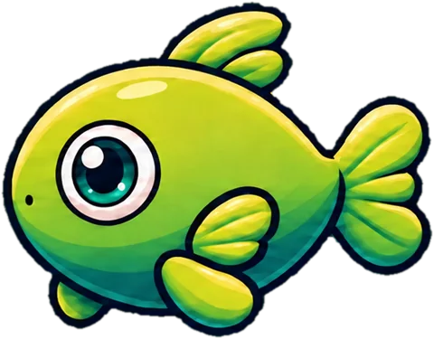

 WaterPoison
WaterPoisonTap a stage to read its story.
Morlid is a rounded, bright-green little fish with wide innocent eyes and a tiny fan-tail. It drifts between coral formations in the bay's shallows, nosing into crevices and blowing small bubbles that carry a faint bitter smell - a warning the poison element is already active, though harmless at this stage. Its big eyes make it look perpetually surprised, and it opens and closes its small mouth even when not eating, as if practicing words it's heard echoing through the water from above.
Field note: Morlid's bubbles smell faintly of sea-herbs - the bay folk use them to locate schools by sniffing the tide.
Coral Bay. Morlid and its family are found in the Coral Bay. See everyone who lives there.
Share a Bond Food that matches its types to become friends. Morlid loves:
A Bond Food is not a trick. It joins your spirit with the Kimuro's spirit, and only when it chooses you.
Print the Kimuro adventure packs: mazes, cards, a board game and Bond Mark medals.
See the printable packs